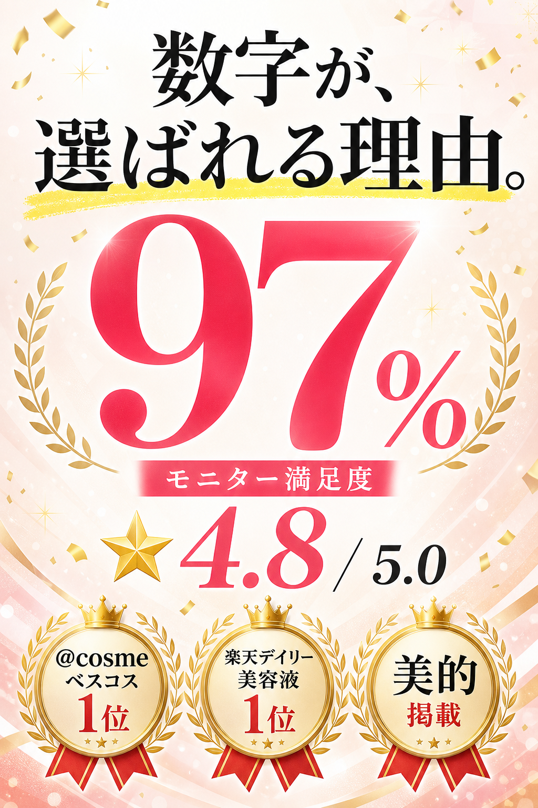
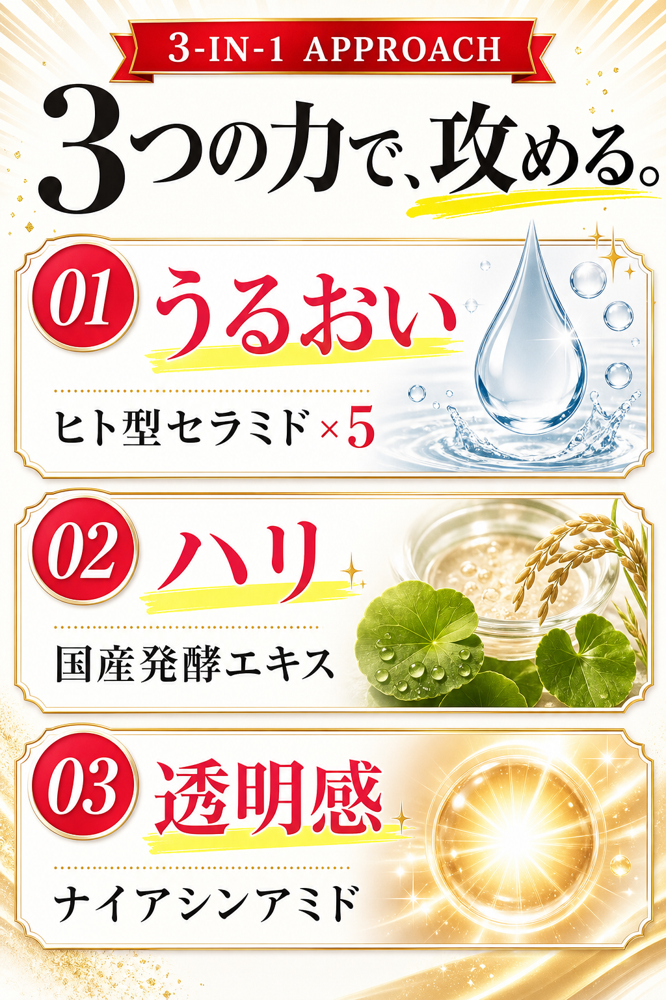
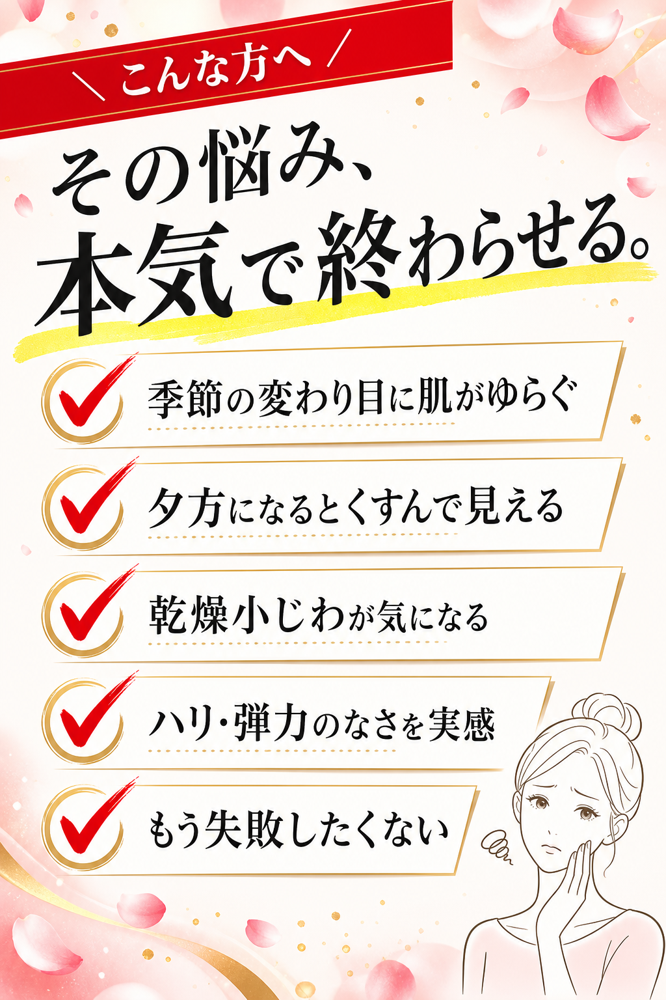

縦長
lp-from-codex
スマホLPをセクション別スライスで生成
- FV / 証明 / ベネフィット / こんな人 / 流れ / 登壇者 / CTA
- 各スライス 1024×1536 PNG（gpt-image-2 直接生成）
- HTML/CSS で組み上げて1本のLPに
- 透明CTAボタンを画像の上に重ねる構造
ChatGPT サブスク枠で動く。API課金ゼロ。Claude Code を抜けない。
横長16:9 のスライドデッキも、縦長スマホLPも、同じ仕組みで量産。
Image 2.0 は使いたい。でも Codex に乗り換えるのは面倒。
Claude Code の中で完結させたい。
Codex を MCP として呼び出すと、Claude Code から出ずに Image 2.0 が使えます。
ChatGPT のサブスク枠で動くので、API課金は走りません。
スライドもLPも、同じ仕組みでサクッと量産できる薄いブリッジを作りました。
brew install openai/tap/codex同じ仕組み、違う出力。どちらも単独で動きます。
スマホLPをセクション別スライスで生成
セミナー資料・カルーセル投稿を量産
Claude Code を起動して、3行コピペするだけ。
/plugin marketplace add sammyTI/image2-from-claude/plugin install lp-from-codex@image2-from-claude
/plugin install slides-from-codex@image2-from-claude/reload-pluginsHTTPS URL を明示的に指定してください:
/plugin marketplace add https://github.com/sammyTI/image2-from-claude.gitbrew install openai/tap/codex
codex loginnpm 派は npm install -g @openai/codex でも可。
実際に lp-from-codex で生成したスマホLP。架空ブランド「あゆね」のスキンケアトライアル申込LP。




話しかけるだけ。ヒアリングは Claude Code 側で進みます。
mcp__codex__codex が見えない | Claude Code を再起動。.mcp.json の codex エントリ確認。 |
| 画像生成で API 課金が走る | codex login で ChatGPT アカウントを選び直す。 |
| Image 2.0 がレートリミット | サブスク枠の上限。少し時間を置く。 |
| 生成画像が 30〜100KB しかない | HTMLフォールバック疑い。本ツールは1枚目のサイズゲートで自動検知して再投します。 |